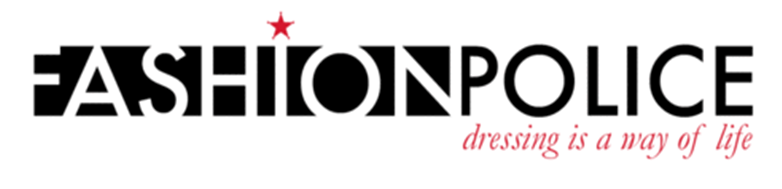
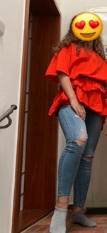
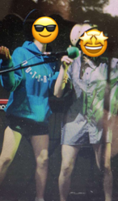

wee woo wee woo
Fashion police is back and today we are going to review even more outfits. Are we going to toot or boot them?
First Outfit:
The woman is sporting the perfect mix of a casual and elegant outfit. Someone knows how to dress haute. She is wearing a Ferrari red colored blouse paired with a black belt with golden details. This accentuates her figure, giving her a snatched waist. The top is paired with ripped skinny jeans. It looks sickening. Total 9/10, perfect outfit for a night out dancing with friends.
Second Outfit:
We do not say this a lot, but these outfits are trash. The man on the left obviously put no effort into his clothes. Wearing basic black shorts and an oversized dodger blue hoody. He paired the entire outfit with an outdated flat-brimmed hat. The man on the right is wearing what looks like a 60-year old button up, that is way too big. This is paired with a dirty white helmet. Both of their outfits are giving me it-is-2003-and-I-am-from-the-hood-vibes. This is not a look. Total -2.25/10, the only place these outfits would be wearable is in the trash, where they belong.